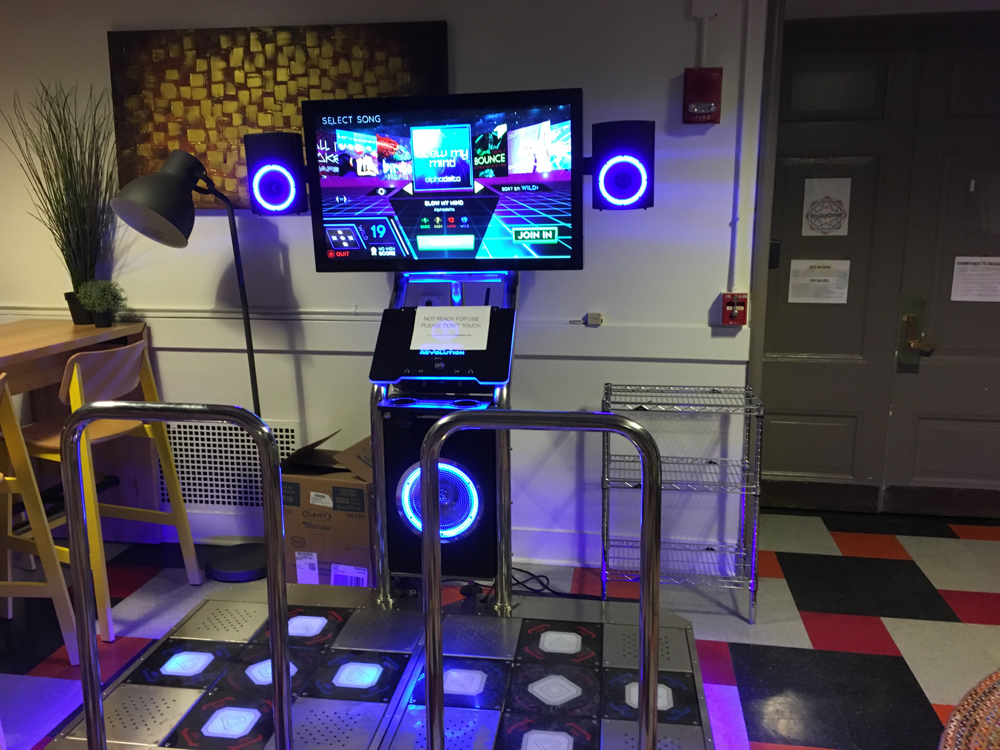

This is a webpage for the brand new StepManiaX cabinet at the Massachusetts Institute of Technology. The machine is available for all members of the MIT community to use. We are currently in the process of obtaining a dedicated laptop to run StepMania behind the cabinet with custom songs.
Where is it located?
The cabinet is located in Pritchett Cafe next to the Rainbow Lounge on the second floor of Walker Memorial (50). You can get there via the basement or from the side of the building facing East Campus.
Pritchett Cafe is open from 3pm to 9pm on Mondays to Wednesdays over IAP. You will need an MIT ID card to access the machine outside of cafe hours.
ITG Events
I will be hosting ITG events at the cabinet regularly. If you would like to be reminded of when an event is happening, please subscribe to the StepMania CSAIL mailing list.
Special thanks
We would like to thank the De Florez Fund for Humor for funding this project with a total of $7,000 in funds – this cabinet wouldn't be here if it weren't for their generous donation.
We would also like to thank Kyle Ward, CEO of StepManiaX, for manufacturing the high-quality cabinet and pads and personally assisting us in obtaining a machine.
Finally, thanks to everyone who helped make this happen, from helping assemble the cabinet to giving moral support.
– Robin Park '19